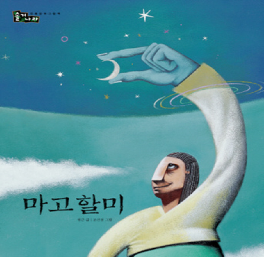
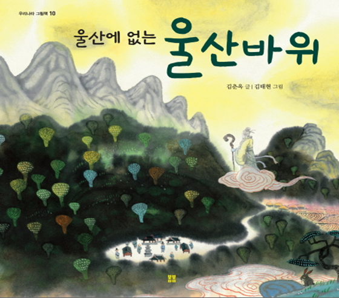
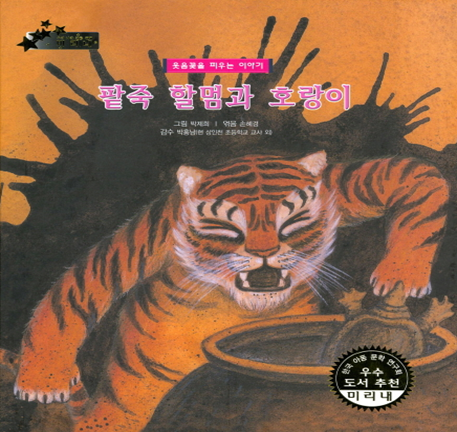
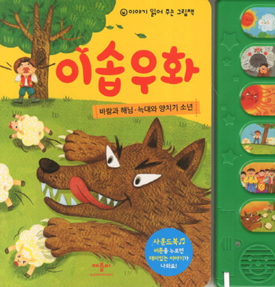
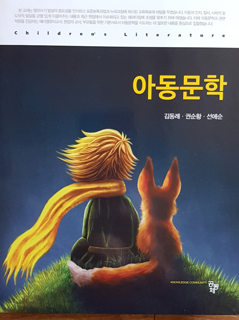

1. 신화 : 단군신화, 삼국유사, 바리공주, 마고할미
신화(myths)는 신성시 되는 이야기로 세상이 어떻게 생겨났는지 최초의 사람은 누구였으며 어떻게 살았는지와 같은 초월적 능력을 가진 신과 영웅이 주인공으로 등장한다. 천지 창조나 우주의 기원과 발생, 사회 종교적 관습의 기원， 역사의 기원 등 사랑, 기쁨, 슬픔, 절망의 내용을 담고 있다.
우리나라 신화의 효시는 고조선의 ‘단군신화’이며, ‘삼국유사’, ‘바리공주’, ‘백두산 이야기’ 등과 산, 강, 바다를 만들었다는 여신의 ‘마고할미’ 등이 전해오고 있다.
이러한 신화는 그리스 로마신화, 인도, 이집트, 로마신화와 함께 사건이 일어난 시간과 공간에 대한 특성이 밀접하다. 반면, 영국을 중심으로 노르웨이, 아일랜드에 나오는 신들은 사납고 거칠며, 웅장한 영웅적인 기질을 내포한다. 또한 히브리 신화는 자연과 우주창조에서 인간창조로 이어지는 내용과 구원의 역사 내용을 가지고 있다.

2. 전설 : 불개, 백일홍, 울산에 없는 울산바위
전설(legends)은 신화에 비해서 더 역사적 진실성을 가지며 초자연적 현상에 대한 개인적 체험담이다. 전설은 특정 시대, 지역, 인물을 나타내는 이야기이다. 전설은 초자연적인 신화에 비해 역사적인 사실성으로 증거물을 제시하는 경우가 많다. 즉, 사건의 3요소인 시간, 공간, 인물 중 하나라도 뒷받침하는 소재와 내용으로써 인물, 자연물, 풍속, 지명에 따라 기념물이나 증거물이 존재한다.
대표적인 전설로는, ‘불개’, ‘백일홍’, ‘찔레꽃’, ‘큰 도둑 거믄이’ 등과 설악산 울산바위에 관한 전설을 다룬 ‘울산에 없는 울산바위’가 있다.

3. 민담 : 우렁 각시, 커다란 순무, 아기돼지 삼형제, 임금님 귀는 당나귀 귀, 장화와 홍련
민담(folktales, fairy tales)은 인간이 이해할 수 없는 자연현상을 설명하려는 인간의 노력을 드러내기 위해 시대와 공간을 초월하는 이야기이다. 인간의 보편적인 정서인 공포, 슬픔과의 관계, 사회의 관습과 문화, 사상 및 신앙 등 전통문화적인 요소들이 많이 포함되어 있다.
민담은 근거가 없고 가공적이며 허무맹랑한 소문과 같은 마술적 요소가 많다. 민담에는 마법, 괴물, 요정 등 선하고 착하게 살면 복을 받고 절대적인 힘의 도움으로 고난을 극복하게 된다는 호소력이 간직되어 있다.
대표적인 민담은 ‘우렁 각시’, ‘커다란 순무’, ‘아기돼지 삼형제’, ‘임금님 귀는 당나귀 귀’, ‘정신없는 도깨비’, ‘장화와 홍련’ 등과 할머니를 잡아먹으려는 호랑이를 물리친 ‘팥죽할멈과 호랑이’가 있다.

4. 우화 : 이솝우화, 여우와 신포도, 사자와 토기, 여우와 두루미
우화(fadles)는 인간처럼 말하는 동물이 주인공으로 나와서 삶에 필요한 교훈이나 처세술이 담긴 이야기이다. 우화는 동물들의 상징적인 특성에 의해 도덕적이고 윤리적인 문제에 대해 영향을 깊이 미쳤으며, 문화 및 전승에 중요한 기여를 하였다.
유명한 우화로 ‘이솝우화(Aesop's fable)’에는 ‘여우와 신포도’, ‘여우와 두루미’, ‘사자와 토끼’, ‘양의 탈을 쓴 늑대’ 등 짧고 교훈적인 내용이다. 동화로 구성된 ‘바람과 해님’, ‘토끼와 거북이’ 등이 우화로 있다.

5. 전래동화의 문학적 특징
1) 주제
전래동화의 주제는 대부분 단순하지만 의미있는 강력한 메시지를 내포한다. 사회의 전통 의식, 규칙, 가치, 문화의 특수성을 나타낸다(최운식 외, 1998). 주로 자연물이 생겨난 유래, 익살이나 해학을 다루고 권선징악의 윤리관을 진지하게 드러낸다.
2) 배경
전래동화는 시공간적으로 현실과 비현실적인 배경을 구체적으로 제시하지 않는다. 옛날이라고 제시하지만 여러 시대를 걸쳐 축적된 공동 산물로써 그 시기가 언제인지 정확하게 알 수 없다.
3) 등장인물
전래동화에 나오는 등장인물의 성격은 선과 악의 전형적인 양극성을 지닌다. 신비로운 존재로 현실에 존재하지 않는 요정이나 마법사, 산신령, 도깨비, 선녀 등은 놀라운 능력을 발휘하여 어려운 인물을 돕거나 못된 인물을 혼내주기도 한다. 대부분 착하고 마음씨 좋은 주인공이 고통과 시련을 당하게 되고 위기에 직면하면서 극적인 전환을 통하여 행복한 결말을 맺는다.
4) 구성
전래동화는 시작과 끝에서 일정한 형식을 취한다. 도입부분에서 시간과 장소를 초월하여 ‘옛날 옛날에~’ 로 시작하며, 중간 절정에서는 선과 악, 여자와 남자의 대립， 강함과 약함의 대립， 인간과 동물의 대립과 반복의 상황으로 흥미있는 부분이다. 결말에는 나쁘고 악한 주인공은 실패하거나 죽고, 매력있고 착한 좋은 주인공은 성공하거나 행복하게 된다.

2022.01.11 - [분류 전체보기] - 문학과 아동문학의 의의 - 인간의 보편적인 윤리와 가치
문학과 아동문학의 의의 - 인간의 보편적인 윤리와 가치
아동 문학의 의의 인간은 책을 통해 과거의 역사와 인간의 삶을 알게 되고, 새로운 정보나 지식, 정서 등 직･간접적으로 습득할 수 있다. 문학이란 작가가 인간의 세계를 그린 작품이다. 문학은
think-sis.co.kr